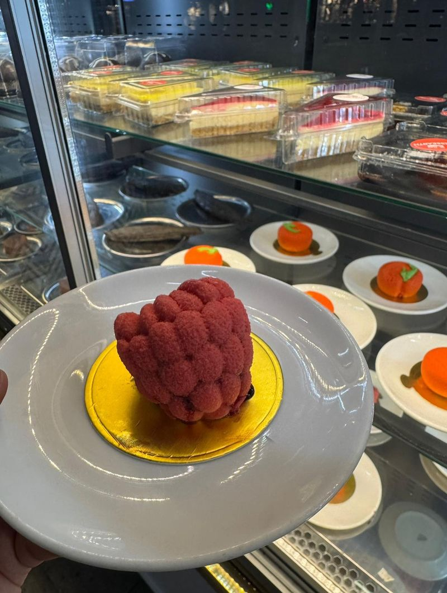
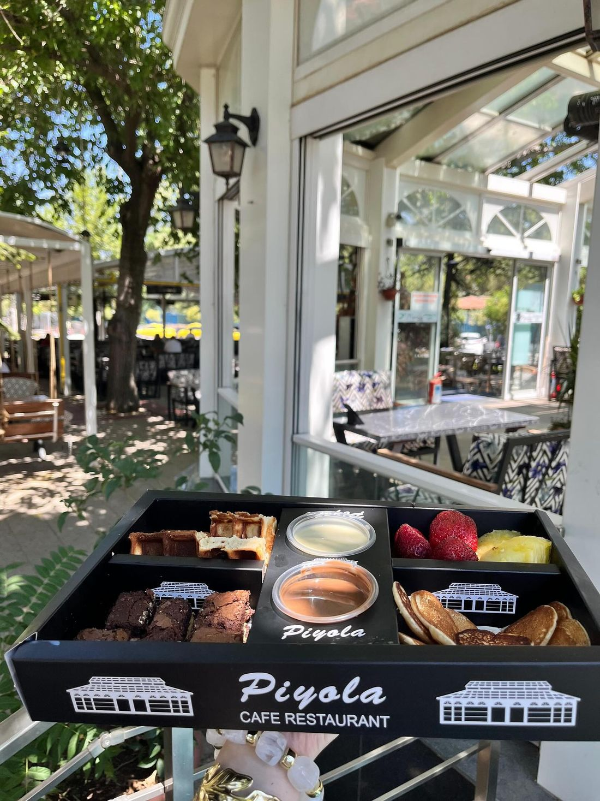
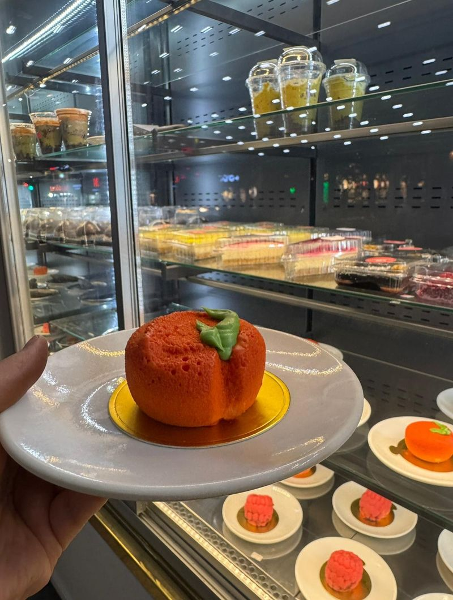
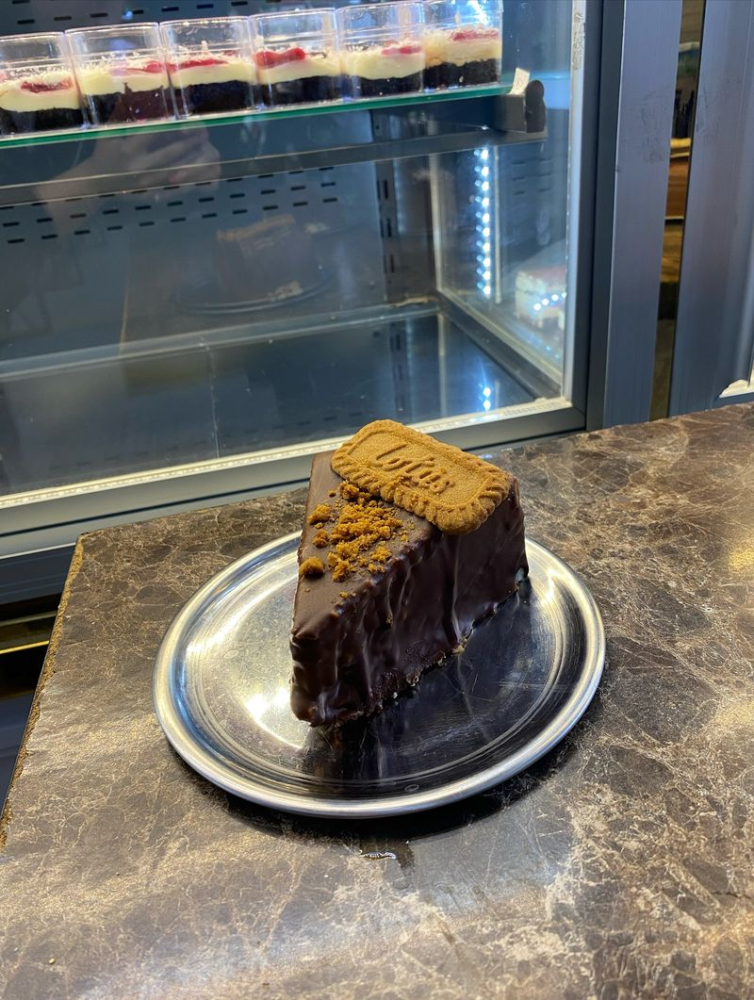
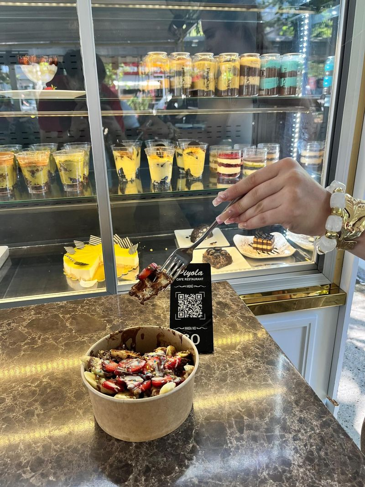
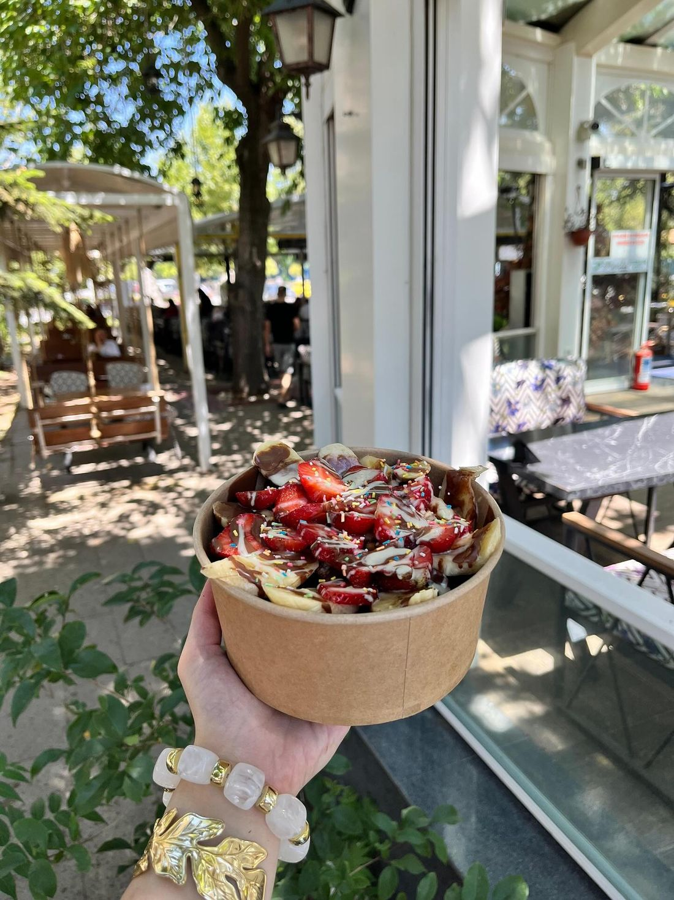

Frambuaz
Belçika beyaz çikolatalı ipeksi krema, frambuazlı akışkan dolgu, kıtır kıtır çikolata kaplama.
Belediye önü · Hasan Gürbüz Parkı · Isparta
Cafe Restaurant
Parkın ağaçları altında, cam tavanlı beyaz bir köşk. Sabah kahvaltısından gece yarısına kadar; vitrinde Fransız usulü meyve tatlıları, masada kahve.

Vitrin
Piyola'nın vitrininde Cedric Grolet'nin Fransız tatlılarından esinlenen, meyve ya da kahve çekirdeği şeklinde hazırlanmış pastalar var. Tarifleri kafenin kendi anlatımıyla:

Belçika beyaz çikolatalı ipeksi krema, frambuazlı akışkan dolgu, kıtır kıtır çikolata kaplama.

Yumuşacık, jölemsi kıvamda şeftalili krema ve akışkan şeftali iç dolgusu.

Islak kek, kahveli yumuşak krema ve akışkan kahve dolgusu.



Gece yarısına kadar
Piyola her gün 09:00'dan 00:00'a kadar açık. Akşamüstü gelip ışıklar yanana kadar oturmak için vakit bol.
Sabah
Kahvaltı serpme gelir, ürünlerin bir kısmı ev yapımı. Isparta kahvaltı rehberlerinde Piyola'nın tabağı için sayılanlar:
Gün içinde öğle ve akşam yemeği menüsü de var; en çok önerilen pizza. Waffle ise gençlerin favorisi.

Mekân
Piyola, Belediye önündeki Hasan Gürbüz Parkı'nda. Kapalı bölüm cam tavanlı ve etrafı camla çevrili; dışarıda ağaçların gölgesinde bahçe masaları var.
Güler yüzlü personel ve hızlı servis, ziyaretçilerin en çok andığı şeyler arasında.


Nasıl gelinir